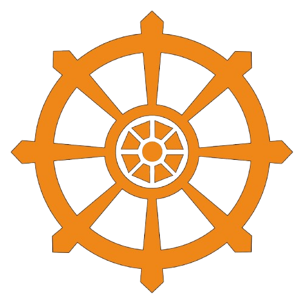

You're Offline
සම්බන්ධතාවය බිඳ වැටී ඇත
We couldn't reach the server. Please check your internet connection and try again.
සේවාදායකය සමඟ සම්බන්ධ වීමට නොහැක. කරුණාකර ඔබගේ අන්තර්ජාල සම්බන්ධතාවය පරීක්ෂා කර නැවත උත්සාහ කරන්න.
Neural Gateway 2026